ゼミ旅行に行きました
今年のゼミ旅行では、広島県内の主要な観光地をいくつか周りました。
例年通り、今年もM1の学生が旅行の計画と進行を取り仕切ってくれました。
１日目の朝は、白竜湖観光農園にて、梨狩りをしました。
なっている木によって梨の味が全然違うことに驚きでした。
お昼は、中央森林公園にてBBQを行いました。
午後からは忠海港へと移動し、フェリーで大久野島、通称ウサギ島に訪れました。
ウサギにエサをあげたり、テニスや野球などのスポーツを楽しんだり、島を自転車で走り回ったりと、各自有意義な時間を過ごしました。
２日目は、朝から４年生たちによる初のセミナー発表を行いました。
ゼミ旅行では、毎年４年生が論文紹介などの発表を行うことになっています。
各自よく準備が出来ており、先輩や先生からも意見が飛び交い、程よい議論となりました。
お昼からは竹原に移動し、昔ながらの古い町並みの中を歩いて楽しみました。
今年も楽しいゼミ旅行となりました。
ゼミ旅行を計画してくれたM1の学生には感謝です。
例年通り、今年もM1の学生が旅行の計画と進行を取り仕切ってくれました。
１日目の朝は、白竜湖観光農園にて、梨狩りをしました。
なっている木によって梨の味が全然違うことに驚きでした。
お昼は、中央森林公園にてBBQを行いました。
午後からは忠海港へと移動し、フェリーで大久野島、通称ウサギ島に訪れました。
ウサギにエサをあげたり、テニスや野球などのスポーツを楽しんだり、島を自転車で走り回ったりと、各自有意義な時間を過ごしました。
２日目は、朝から４年生たちによる初のセミナー発表を行いました。
ゼミ旅行では、毎年４年生が論文紹介などの発表を行うことになっています。
各自よく準備が出来ており、先輩や先生からも意見が飛び交い、程よい議論となりました。
お昼からは竹原に移動し、昔ながらの古い町並みの中を歩いて楽しみました。
今年も楽しいゼミ旅行となりました。
ゼミ旅行を計画してくれたM1の学生には感謝です。
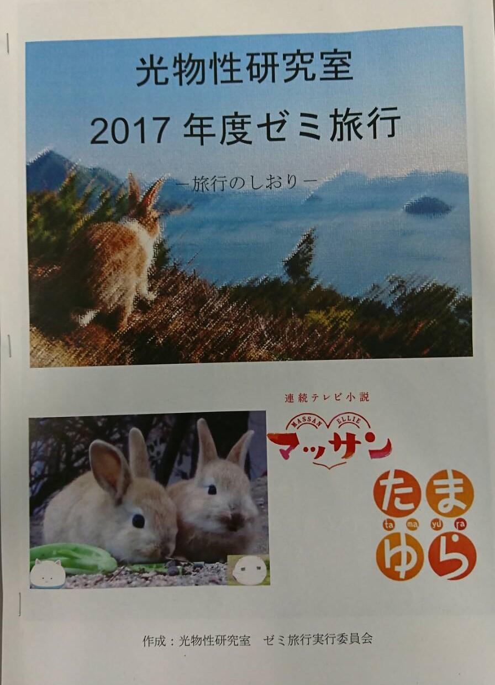
ゼミ旅行のしおり。M1の学生たちが作ってくれました。
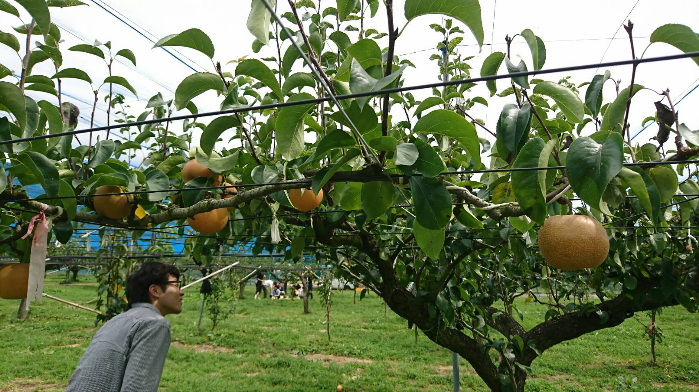梨
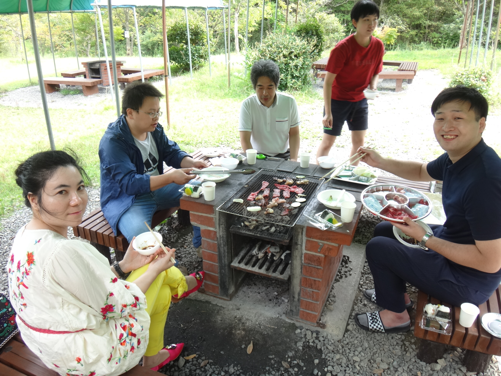みんなでBBQ
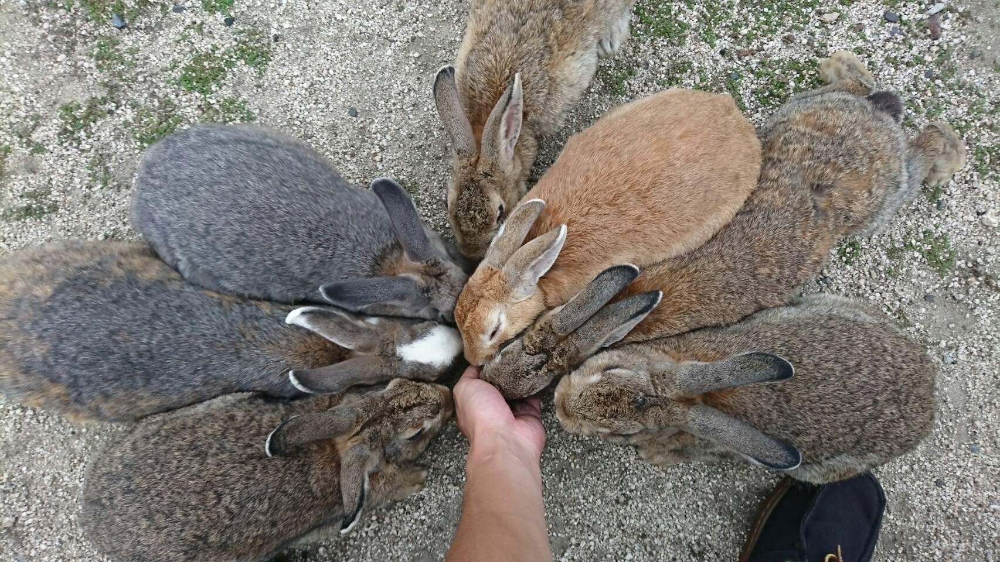大久野島のウサギたち

M2の後藤くんと記念撮影するウサギ
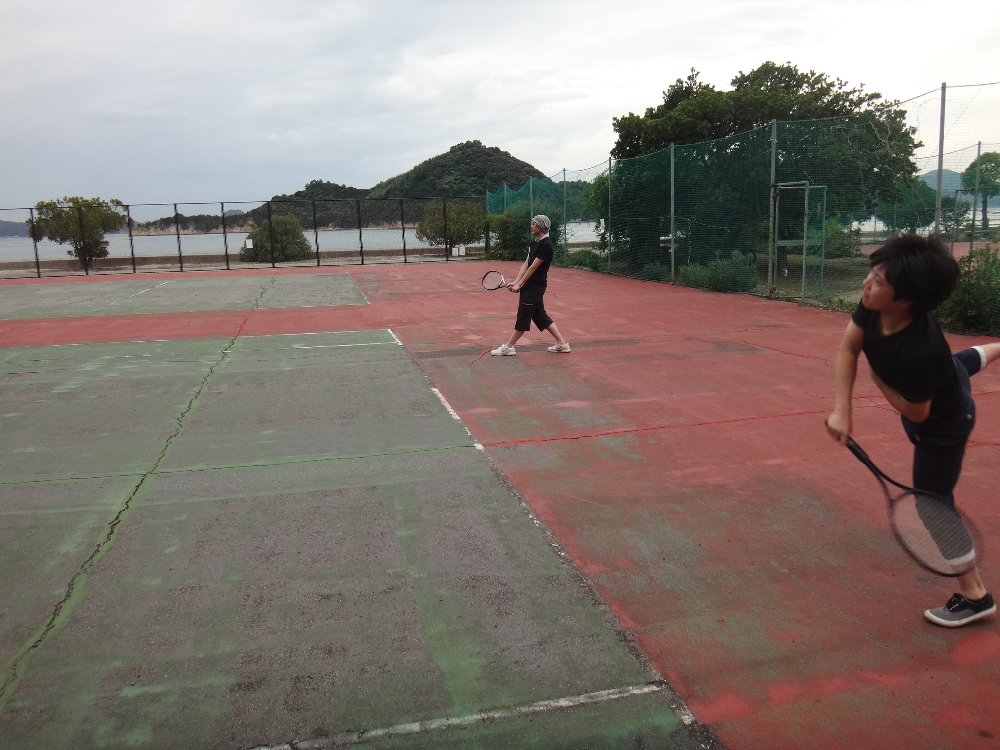テニスを楽しむD2の角田さんとM1の石坂くん
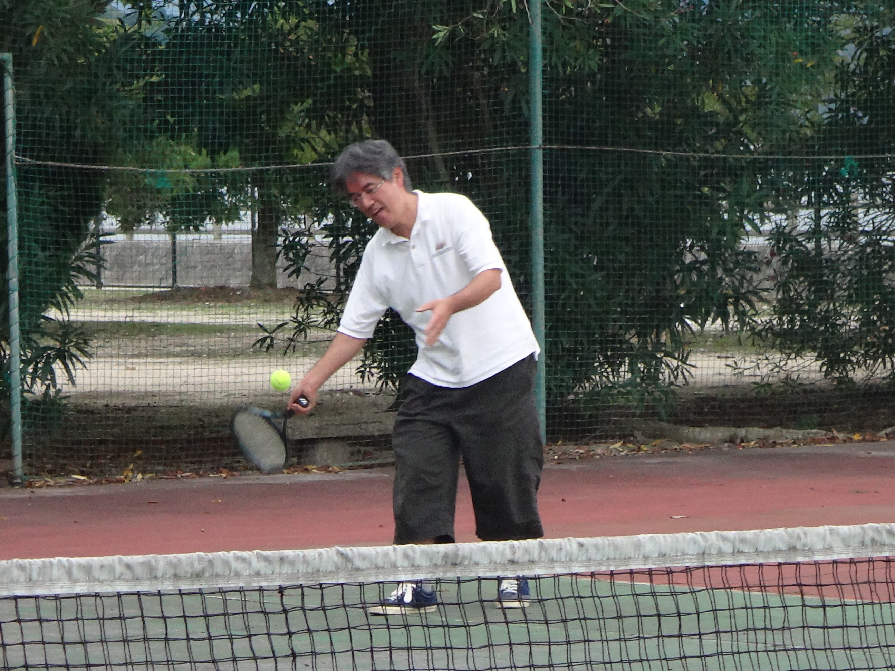迎え打つのは木村先生

B4の北山くんのセミナー発表
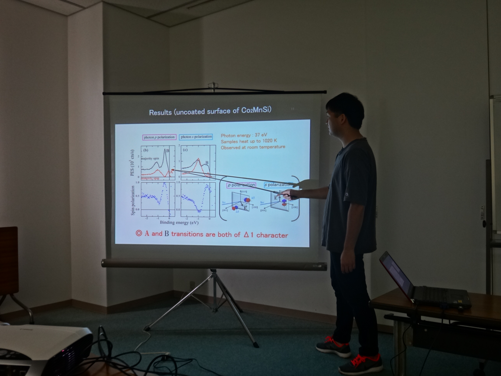B4の鹿子木くんのセミナー発表

B4の竹本さんのセミナー発表
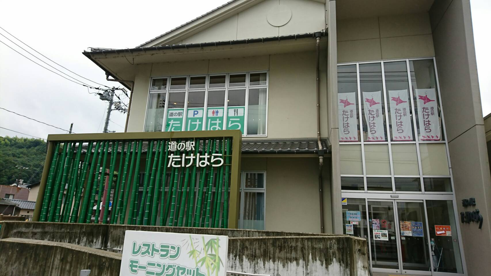竹原駅
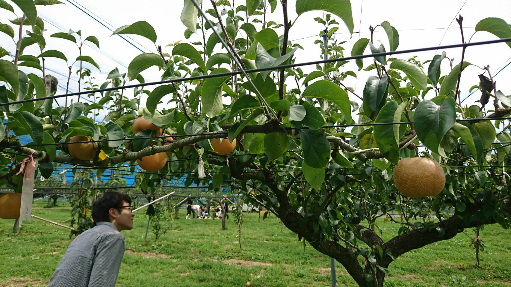
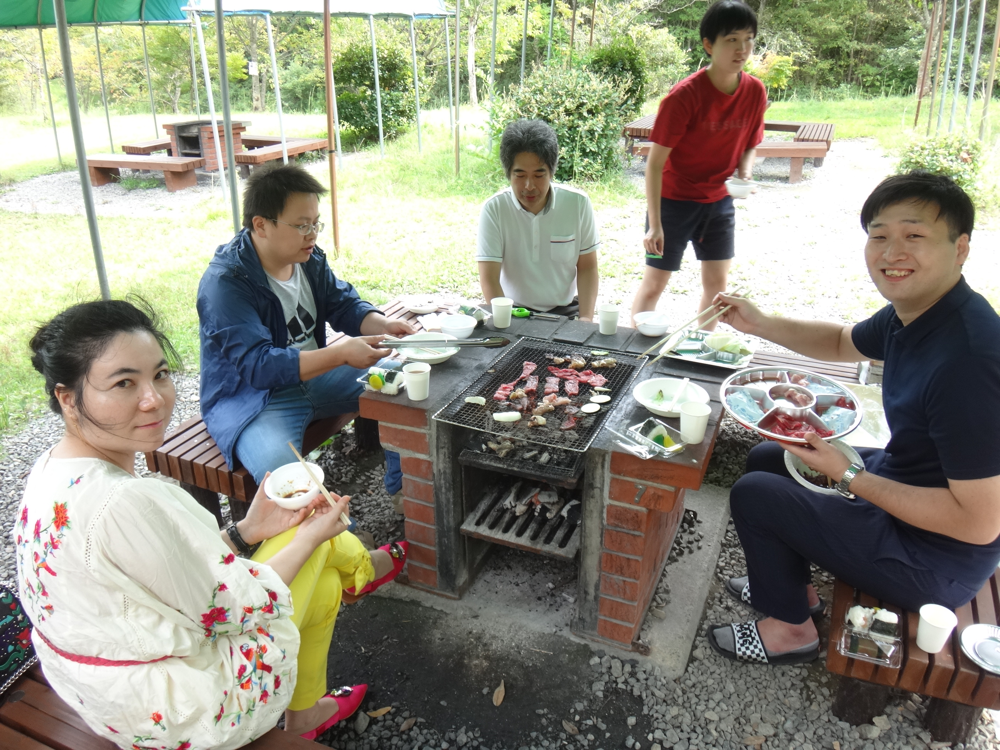
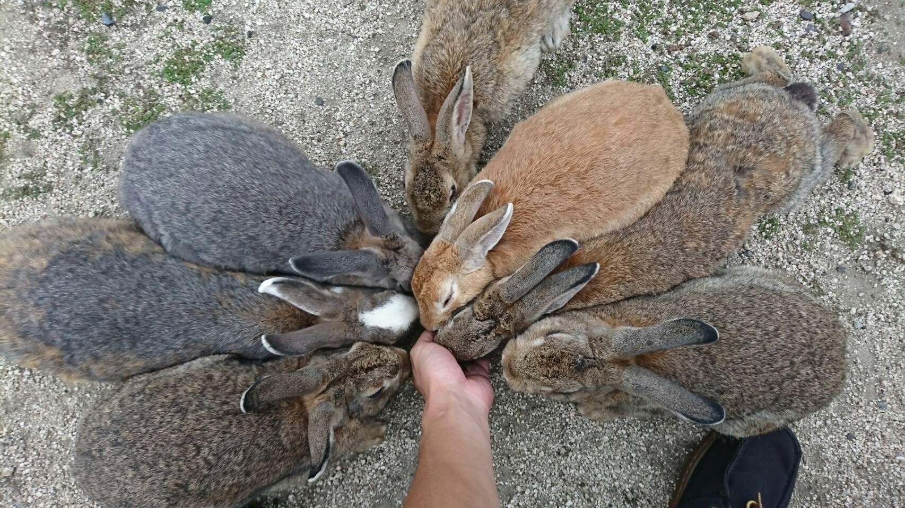
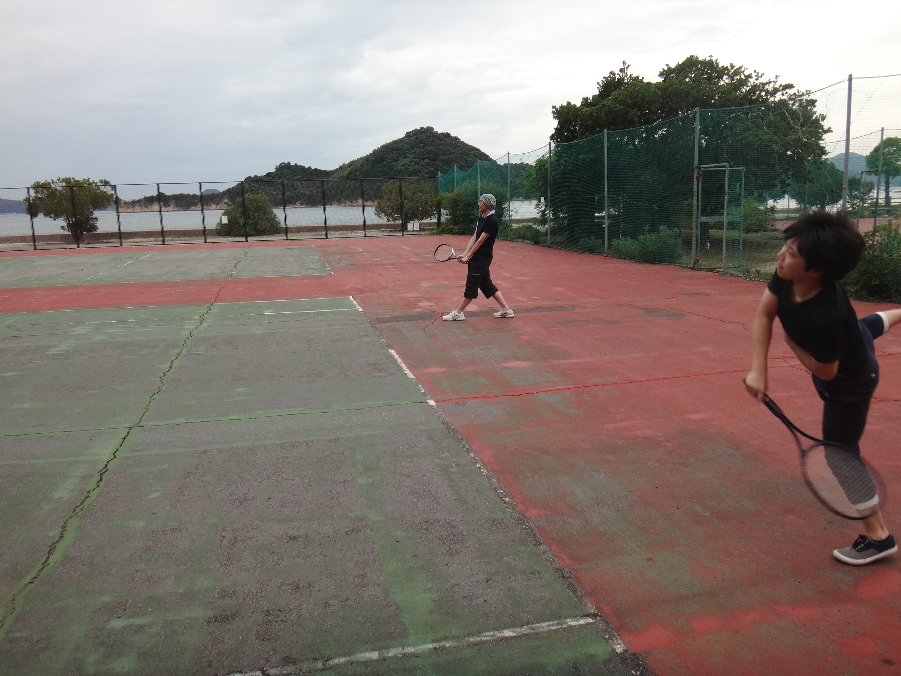
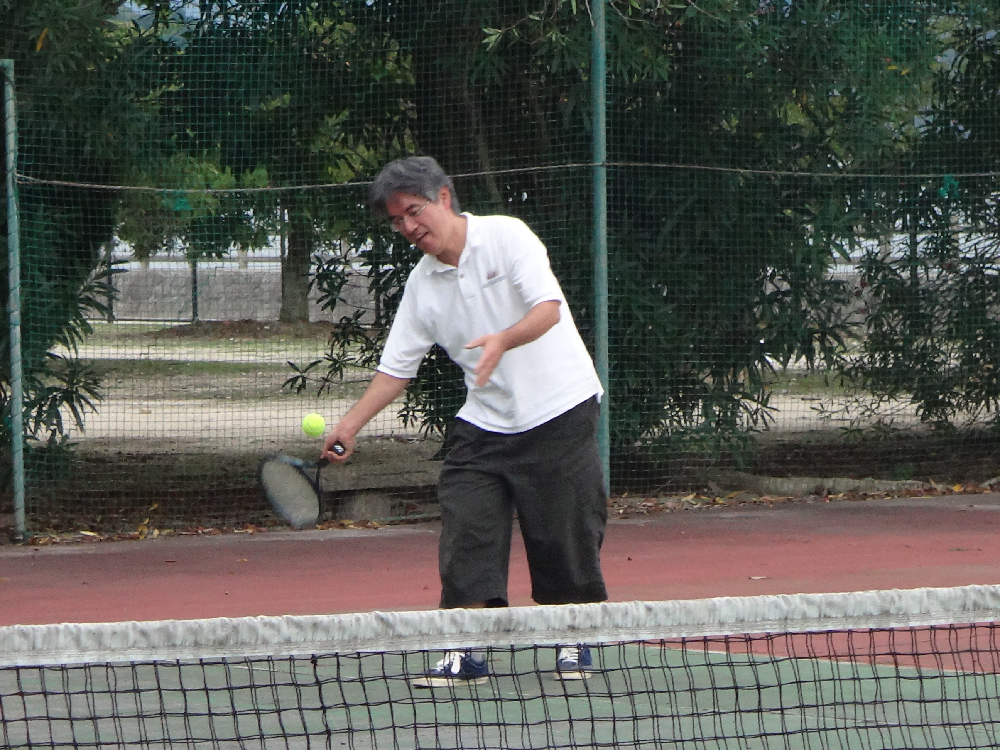
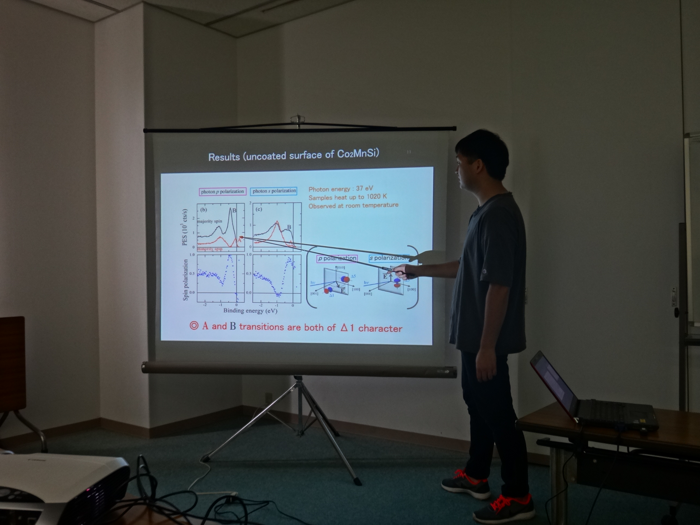
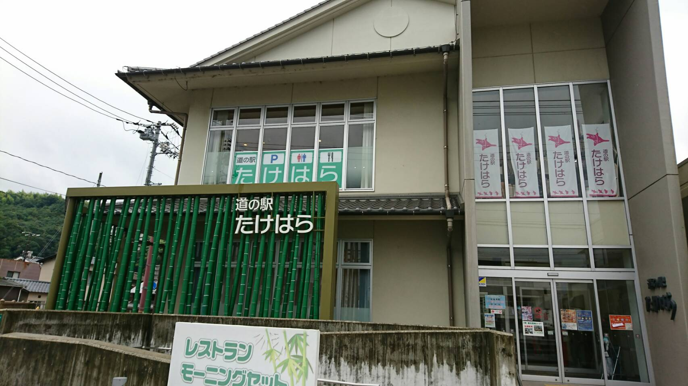
文責：宮下剛夫